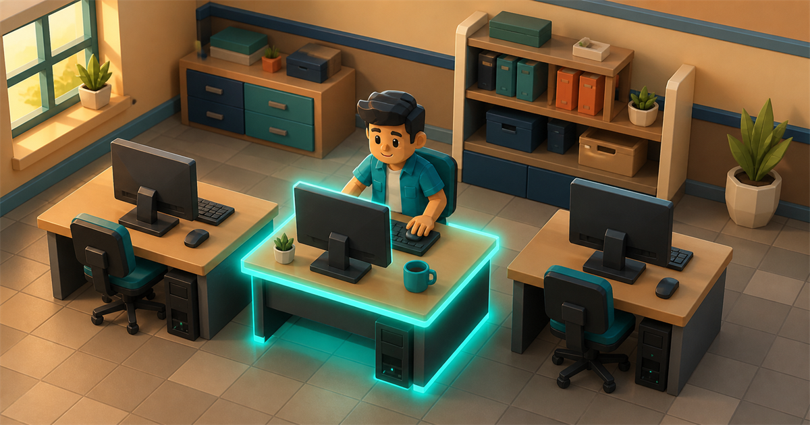
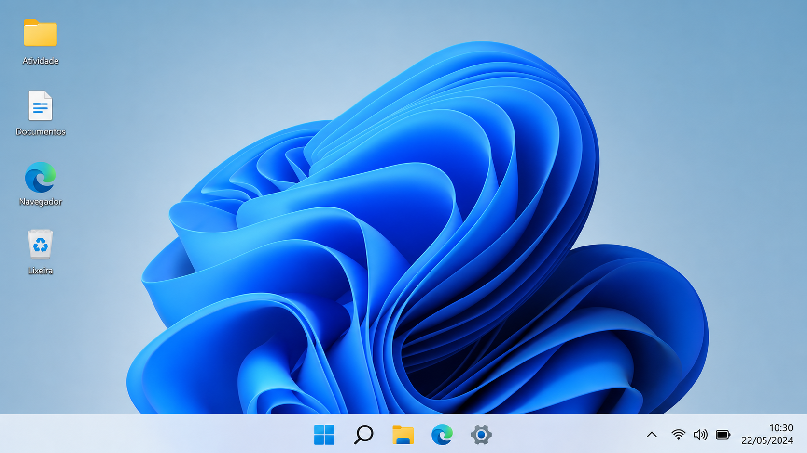

Jogo 01Observação
Arraste e organize
Classifique os itens
Descubra o que é entrada, saída, hardware, software ou periférico híbrido.
Começar atividadeOnze jogos rápidos para reconhecer equipamentos, programas, redes, sistemas operacionais e ferramentas de produtividade.
Arraste e organize
Descubra o que é entrada, saída, hardware, software ou periférico híbrido.
Começar atividadeEscolha e descubra
O professor prepara o termo e a turma tenta revelar cada letra antes do boneco ficar completo.
Preparar partidaObserve e se mova
A roleta sorteia 74 itens e a turma escolhe um lado para classificar natureza ou fluxo de dados.
Abrir a roletaAnalise e resolva
Resolva seis chamados em dois níveis, identificando o que verificar, a causa e a solução.
Atender chamadosAssocie e conquiste
Encontre o equipamento, conceito ou tecnologia correspondente à definição.
Começar partidaLeia, cruze e descubra
Resolva uma grade aleatória com dez conceitos e definições diferentes a cada partida.
Gerar cruzadinhaEscolha, arrisque e dispute
Escolha categorias, responda perguntas e dispute pontos com sua equipe em uma grande revisão de informática.
Iniciar desafio
6 missõesAprenda e faça
Aprenda o básico do Windows e organize as ações corretas para resolver seis chamados.
Começar treinamento
30 aulas + 15 termosAssista, responda e encontre
Aprenda 30 conceitos em animações rápidas e pratique em um caça-palavras diferente para cada aluno.
Começar aulaAssista, responda e faça
Aprenda os principais recursos em 30 aulas práticas e conclua uma missão final no simulador.
Começar treinamentoAssista, responda e faça
Aprenda a preencher, organizar, formatar e calcular em 30 aulas básicas no simulador.
Começar treinamentoArraste cada cartão até um quadrado. No celular ou teclado, selecione o cartão e depois o destino.
Faltam 40 itens para completar a atividade.